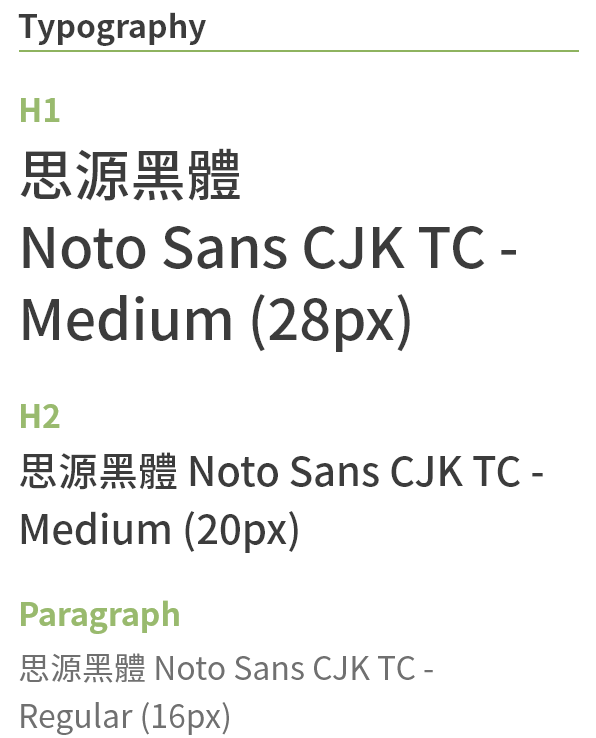
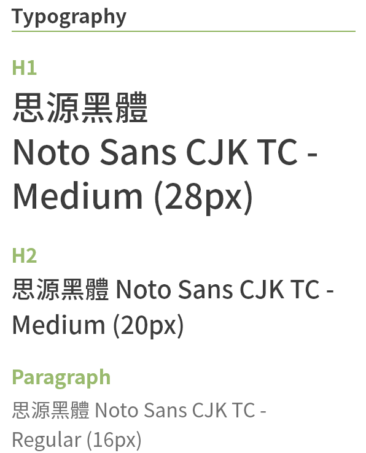

Project

TRUEGRASSES品牌官網設計概念
TRUEGRASSES結合天然禾草與再生塑料，以ECO+ART設計概念，發展環保商品系列；產品呈現環保視覺感、溫潤觸感與淡淡草香，以永續為設計出發點，能重複使用與回收利用，並賦予農業廢棄物新價值。
此專案為我在TRUEGRASSES擔任設計師的期間(2019)重新設計品牌官網，由我和另一位同事（行銷/網站負責人）負責，我的工作為：規劃網站架構、網頁UI設計、以及執行網站的更新（該網站使用架站平台Wix）。
註：2020年原本計畫調整部分網頁版面設計，但最後因其他專案排程沒有實行；這裡展示的是預計更新的設計。
設計目標
1. 統一網站視覺：
原本的網站視覺元素沒有統一，造成資訊層級不易分辨
2. 讓網站架構更清楚明瞭：
讓使用者能更快速獲得需要的資訊
3. 提升行動裝置的瀏覽體驗：在進行前期研究時透過Google Analytics得知有約50%的使用者使用行動裝置瀏覽，因此在重新設計網頁時加強優化了手機版頁面的瀏覽體驗。
網站架構
列出原網站的所有頁面後，討論出新使用流程和網站架構。
Wireframe
在畫Wireframe的過程中，也不斷檢視網站架構是否需要修改。
設計概念
網站採用草綠色作為主色，與品牌主視覺圖相呼應；整體設計風格明亮簡約，希望呈現如該品牌產品般自然清爽的感覺。視覺元素以照片為主，透過自然景觀和裝置藝術等場景拼湊出對於品牌理念”Bring Nature into Culture”的想像。


 


網頁設計
首頁
- 品牌主視覺及Slogan：TRUEGRASSES相當重視品牌理念的傳達，希望在一進網站就能看到。
- 精選商品：精選數個人氣商品，以自動換頁的幻燈片呈現商品情境照和簡介，並導向線上商店的頁面。
- Call to Action：對於不同客戶類型的使用者所採取的行動呼籲不同，較為明顯的綠色"前往商店"按鈕會導向線上商店，讓一般消費者能快速瀏覽商品；而客製化或大量採購的企業客戶，則可透過"聯絡我們"頁面的表單填寫需求。
銷售據點
TRUEGRASSES有約80個國內外的銷售據點，因此我將通路資訊按照地區整理成數個可展開的列表，讓使用者較易瀏覽所在地區的通路；並搭配Wix現有的資料庫表格模組，讓業務或行銷同仁也能輕鬆更新資料。


最新消息

關於我們

聯絡我們